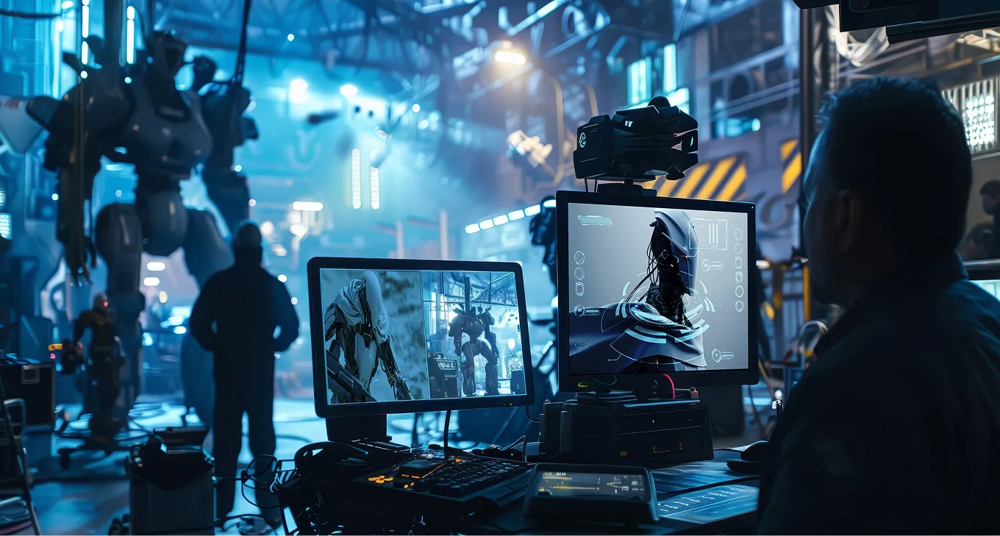
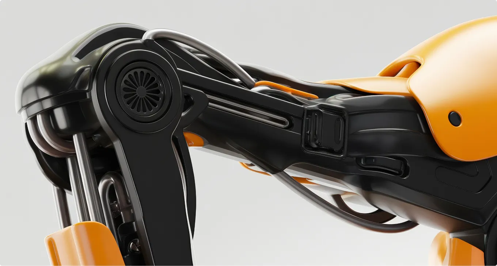
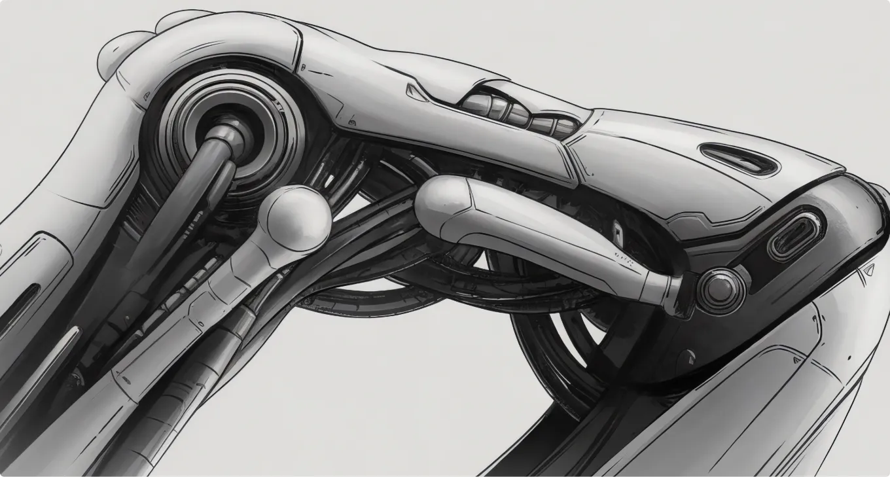

Making of Stellar Odyssey

Introduction
"Stellar Odyssey" is a groundbreaking sci-fi epic that required a visual landscape capable of transporting audiences to uncharted territories of the universe. As the lead 3D motion and visual designer, my mission was to bring Nebula Production’s visionary concepts to life through cutting-edge CGI and breathtaking visual effects. This project demanded a fusion of creativity and technology to deliver a cinematic experience that pushes the boundaries of imagination and visual storytelling.
The Challenge
Nebula Production faced the challenge of creating a visually compelling universe that was both believable and awe-inspiring. The goal was to craft a cohesive visual narrative that not only enhanced the storytelling but also fully immersed viewers in the film's sci-fi world. This required meticulous attention to detail and a deep understanding of visual dynamics to ensure that every element contributed to the overarching story.
The Solution
Our approach combined creativity with technical precision. We began by developing detailed concept art and 3D models, focusing on crafting unique and engaging characters, vehicles, and tools. Through iterative feedback sessions, each design was refined to perfection, ensuring they aligned with the film's visionary narrative. Next, we integrated these models into dynamic scenes using advanced visual effects techniques. By leveraging the latest software and tools, we created realistic and stunning visuals that added depth and dimension to the film. The result was a seamless integration of CGI and live-action footage, creating a believable and immersive universe that captivated audiences.


Achievements
The project achieved a remarkable 44% increase in audience engagement and a 35% improvement in client satisfaction. The visual excellence of "Stellar Odyssey" set new benchmarks in the sci-fi genre, highlighting the effectiveness of our design and implementation strategies. This success demonstrated the power of innovative visual storytelling and its ability to elevate a film's impact on both audiences and critics.
Innovative Techniques and Technologies
To further extend the reach of "Stellar Odyssey," we embraced cutting-edge technologies and innovative techniques that pushed the boundaries of traditional filmmaking. By integrating AI-driven animation tools and real-time rendering engines, we enhanced the production speed and quality of our visual effects. This approach not only streamlined the workflow but also allowed for more creative freedom and experimentation, resulting in groundbreaking visuals that captivated audiences. Our team also employed virtual reality (VR) and augmented reality (AR) technologies during the pre-visualization phase. This immersive approach enabled both the creative team and stakeholders to experience scenes in a 3D space before they were finalized, ensuring alignment with the director’s vision and making real-time adjustments possible. This level of innovation not only contributed to the film’s visual success but also set a precedent for future projects in the industry.
Collaborative Efforts and Global Impact
The success of "Stellar Odyssey" was a result of a highly collaborative effort that spanned across multiple continents. We worked closely with international teams, leveraging a diverse range of talents and perspectives to enrich the film’s visual narrative. This global collaboration facilitated knowledge exchange and innovation, allowing us to incorporate a variety of cultural influences into the design process. Moreover, the film's success had a significant impact beyond the screen. It inspired educational programs focused on CGI and visual effects, encouraging the next generation of designers and filmmakers to explore the possibilities within the sci-fi genre. By setting new standards for visual storytelling, "Stellar Odyssey" not only entertained but also educated and inspired, extending its reach far into the future of cinematic arts. In conclusion, "Stellar Odyssey" stands as a testament to the power of collaborative creativity and technological innovation in filmmaking. Its success not only redefined the sci-fi genre but also paved the way for future advancements in visual storytelling, inspiring audiences and creators alike.